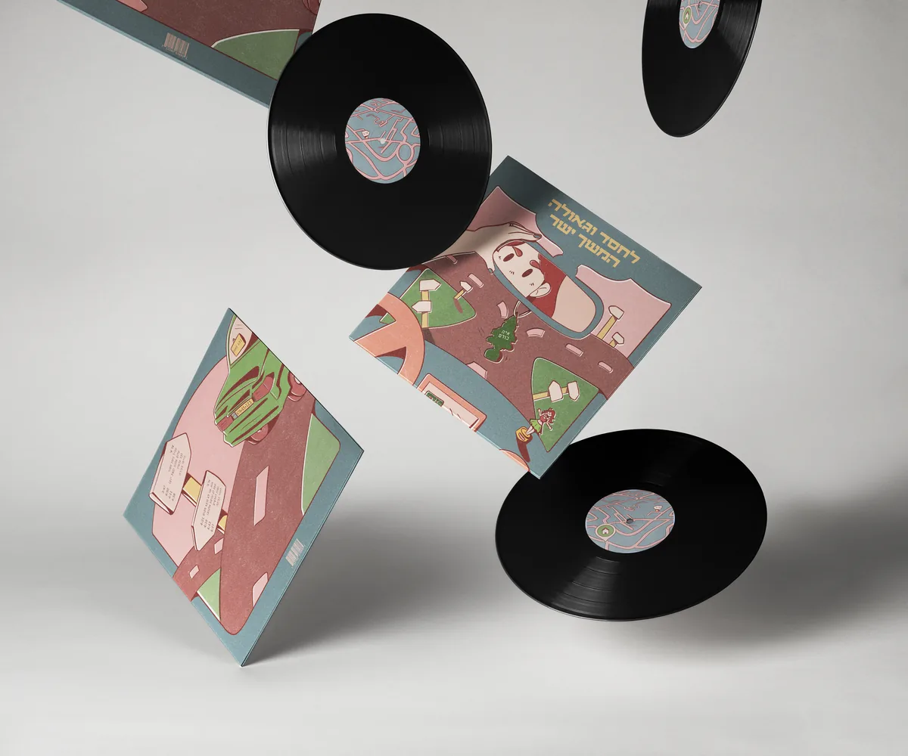
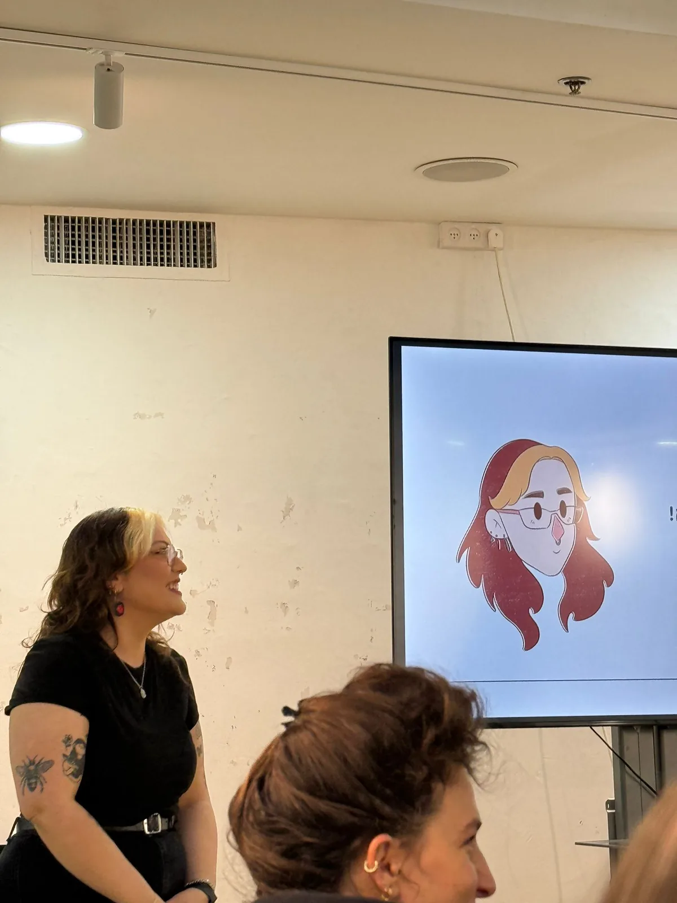
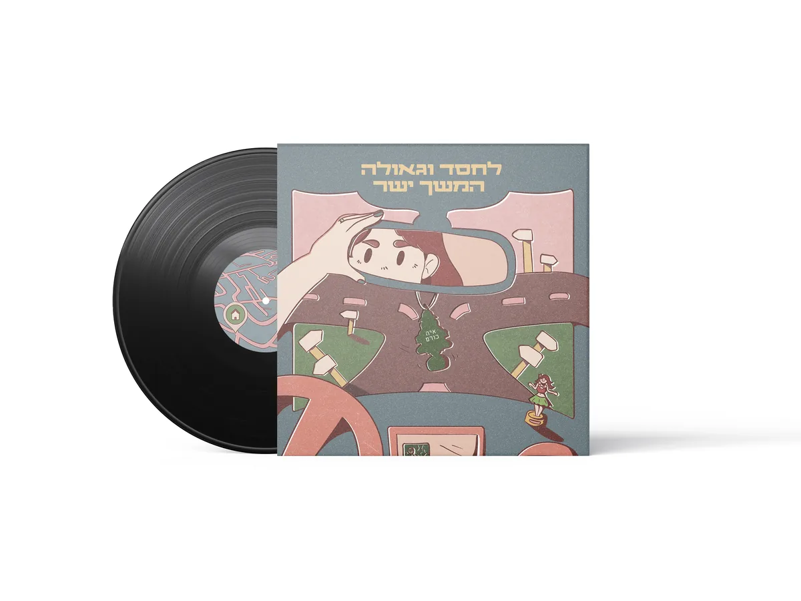
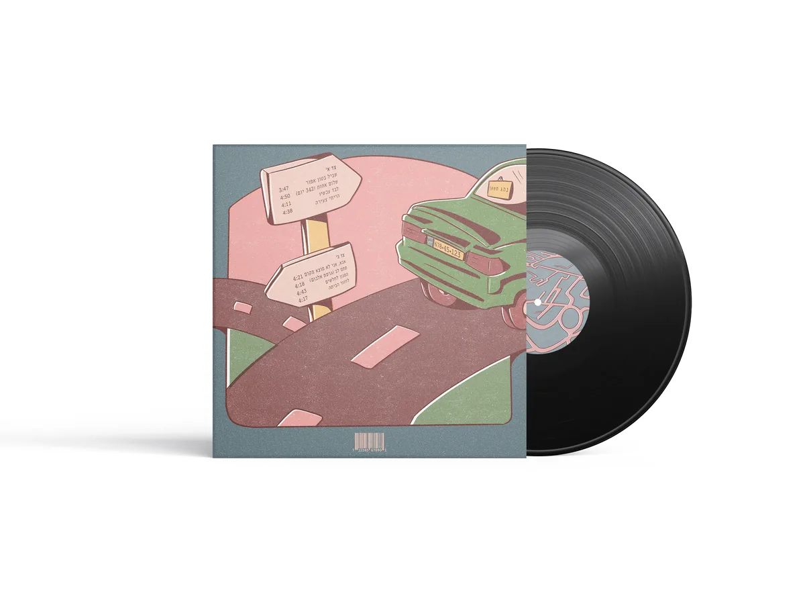
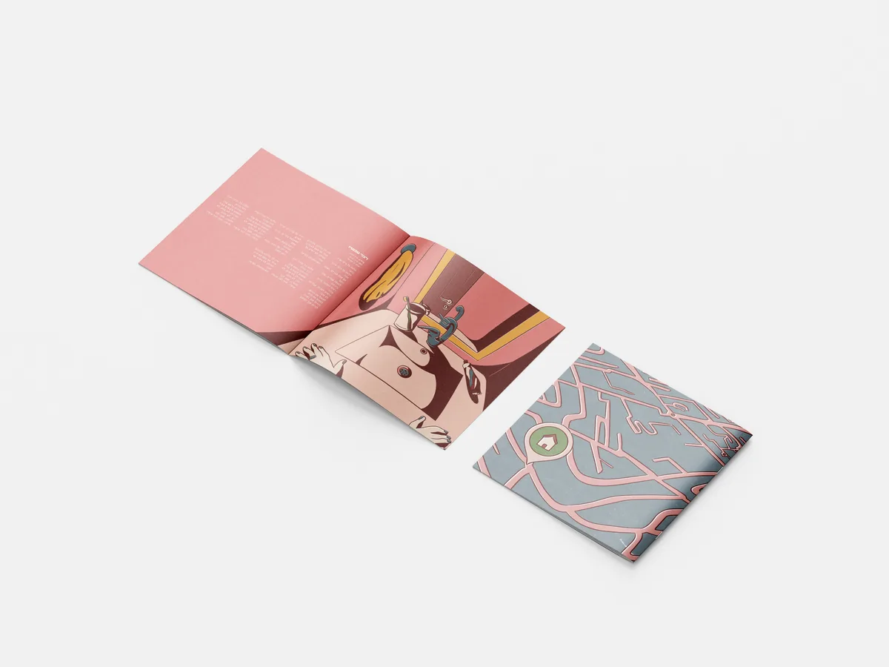
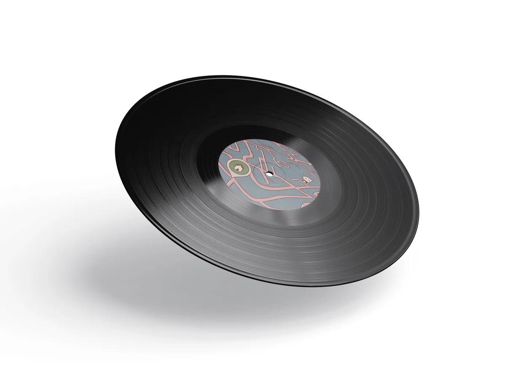

לחסד וגאולה המשך ישר
עיצוב ואיור עטיפת תקליט וחוברת שירים לאלבום של איה כורם
הבריף
לתכנן קונספט כולל לאלבום מוזיקלי לבחירתנו, וליצור חוברת מילים בהתאם. התבקשנו ליצור פריסה לאריזת התקליט והתמודדות עם טקסט מורכב, עימוד וצבע, ופיתוח שפה איורית אישית.
הרעיון
בחרתי באלבום של איה כורם, אשר מדבר הרבה על מאורעות השבעה באוקטובר, על זיכרון והנצחה. מכאן פיתחתי את הקונספט מתוך פרשנות אישית שלי שמתעסקת בהחסרה: בתוך הדימויים וגם בטכניקה האיורית הסגנונית. בתוך החוברת כל שיר מקבל איור משלו, בפלטה מצומצמת של ורוד, ירוק, כחול-אפור וחום, ובטקסטורה גרעינית שמזכירה הדפסה ישנה. יצרתי מרווחים בין הצבעים, ממש להדגיש את החוסר שנוצר ביניהם כשהם לא ממלאים את כל השטח. האיורים המובילים מתמקדים במסע, בנסיעה הביתה גם כשהדרך אינה ברורה.
תוצרים
- עטיפת תקליט (חזית וגב)
- מדבקות תקליט
- חוברת שירים מאוירת
- יצירת צילומי תדמית




